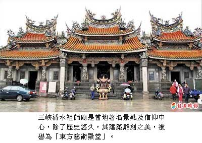

三峽走春 祖師廟賞心悅目
謝佳君｜自由時報／大台北都會生活∣2012年1月22日
說到新北市三峽區的信仰中心，首推有兩百多年歷史的三峽長福巖清水祖師廟，除廟齡悠久，庇佑百姓，更重要的是，其雕工精細，富藝術價值，被譽為「東方藝術殿堂」，平日香火鼎盛，吸引許多國內、外遊客到此朝聖。
清水祖師廟創建於西元一七六九年，歷經三度重建，直到一九四七年，當地藝術家李梅樹親自設計規劃、監工督造，受過正統美術教育的他，認為廟宇也可以是一件藝術品，不侷限於宗教領域，同時帶動地方繁榮。
李梅樹的兒子李景文說，父親看到歐洲教堂、日本京都奈良的寺廟，皆極具藝術價值，更驚嘆雲林北港媽祖廟建築雕工之美，於是著手重建清水祖師廟，盼能薪傳廟宇藝術，也回饋這塊他的生長地。
李梅樹愛鳥、畫鳥、也刻鳥，清水祖師廟的雕刻共有一○六種、一千多隻的鳥，李景文形容，「如果這些鳥一同鳴叫，就成了一部交響樂」，為刻出這麼多的鳥，師傅們可說是「有鳥找到無鳥」。
但是在李梅樹的監工下，刻鳥不僅僅是刻鳥，還得刻出栩栩如生、「動態」的鳥，如鳥剛停棲枝頭，羽毛蓬鬆、爪緊抓枝條、眼神警戒銳利，其力道、神韻、體態等，都必須拿捏恰到好處，就有師傅為了一件作品，重複雕刻七次之多。
李梅樹向多位當代書法名家和畫家邀稿，如「台展三少年」的郭雪湖、林玉山及陳進等；因為將廟宇視為藝術品，這些藝術家不取分文，不計時間，師傅們真正是「拚功夫不拚薪水」，一刀一工皆鬼斧神工，匠心獨具。
探訪山城小鎮 逛不膩
新北市三峽區以清水祖師廟為中心，周圍環繞三峽老街、長福橋及清水街，人潮熙來攘往，卻能同時飽覽潺潺溪流，碧草如茵，構成熱鬧的商圈，春節期間不妨到三峽來趟半日遊，將會發現，三峽是值得一探再探的山城小鎮。
民眾來到三峽清水祖師廟參拜、欣賞完這座「東方藝術殿堂」後，可繞到緊鄰的三峽老街，紅磚拱廊騎樓，搭上具巴洛克風格的三拱牌樓立面，駐足於此，思古情懷油然而生。
再往裡走，便能聞到陣陣麵團酥烤的香氣撲鼻而來，正是遠近馳名的三峽名產—金牛角麵包，其外層酥脆，內層嚼起來則濃濃奶香四溢，除了傳統口味，還推出波羅、巧克力口味及牛角冰淇淋等。
另外，老街還有經常排滿長長人龍、知名的豬血糕；特色店家則如茶山房的手工香皂、老街中段的糖蔥可以看見年輕老闆拉糖蔥的一流技術，或者到老街尾品嘗三峽最負盛名碧螺春茶。
從祖師廟前的廣場沿著三峽河旁的清水街，一旁的木棧道種滿柳樹，這裡有一間結合創意商品、藝文活動、展演空間的「甘樂音樂電影餐廳」；站在祖師廟前的長福橋，則能遠眺鳶山、放眼三峽河畔之美。
來到三峽，也別忘了到「李梅樹紀念館」，跨過長福橋便近在咫尺，透過藝術家李梅樹的藝術作品，有助了解三峽；或到三峽區公所附近的藍染工坊，體驗藍染ＤＩＹ的樂趣，讓這趟三峽之旅增添人文知性氣息。
祖師公誕辰 初六賽神豬
三峽長福巖清水祖師廟今年農曆除夕晚上十一點半，有插頭香的活動，區公所屆時也會來發紅包。另外，每年農曆正月初六是祖師廟的大日子，這天是祖師公誕辰日，祖師廟每年都會舉辦賽神豬，為祖師公祝壽，熱鬧非凡。
廟方表示，今年的頭等神豬重一七六九斤，初六上午在三峽市區將有遶境活動，一路來到祖師廟，現場將展示神豬，同時今年還會製作一千多斤的「麵線豬」。另外，祖師廟這次也首度推出「3D立體祖師公福袋」，只要捐贈香油錢五百元，就能獲得一個。